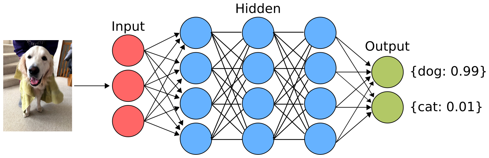
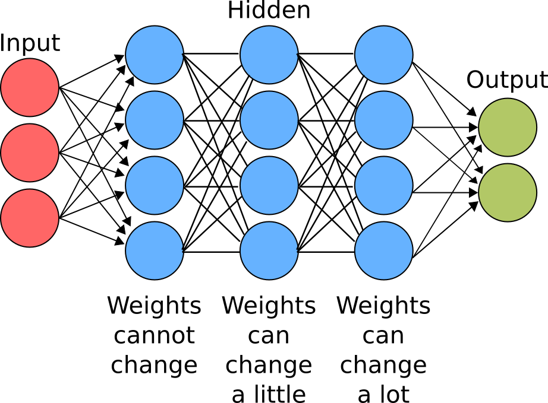
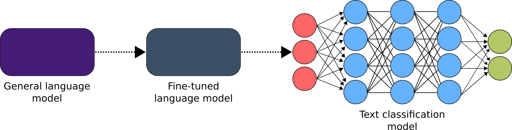

T is for Transfer Learning
When you set out to learn something new, you typically aren’t starting completely from scratch. For example, you probably didn’t have to learn how to read English just to read this blog. Transfer learning is a way to take a model that has already been trained on a related problem and use it as a starting point. This has a few benefits:
- Many sophisticated models take a lot of time/money/computational power to train. Being able to start from these models reduces the overall cost of training a new model.
- Transfer learning typically improves performance (in addition to being easier to train).
- You typically need less labelled data for your problem with transfer learning. As I’ve blogged about before getting labelled data can be challenging.
Transfer learning is most commonly applied to [deep learning]../2020-04-08-d-is-for-deep-learning/index.qmd models for computer vision (images/videos) and natural language processing applications (text).
Classifying cats and dogs
One of the most popular introductory Kaggle competitions is classifying images of cats and dogs. Here we need to predict if an image contains a cat or a dog.

Instead of training the model completely from scratch, we can start with a model trained on the ImageNet dataset. This is a dataset with millions of images that all belong to thousands of categories. For example, some images are categorized as “flamingo” or “basketball”. The ImageNet challenge is a competition to train the best model to predict the correct class out of 1000 preselected classes. Many of these classes are specific dog breeds (e.g. “Pembroke, Pembroke Welsh corgi”) but we are interested in the more generic question of “dog or cat?”. We can take a model that has already been trained on the ImageNet dataset and fine-tune it to our specific problem. These pretrained models are typically deep neural networks (specifically convolutional neural networks or CNNs).
As a refresher, let’s look at how a neural network works at a high level. There is an input layer where the raw data is fed. In the case of images this is pixels. There is an output layer which has a neuron for each class. In our case we have two classes: cats and dogs. In the middle there are hidden layers with weights for each feature. In deep neural networks the features come from the previous layer (e.g. the first hidden layer uses the input layer, the second layer uses the first etc).

When we train a model from scratch, these weights are initialized randomly. In transfer learning, we start with the weights from the pretrained model. This means that we need to use the same model architecture (number of hidden layers, how they are connected etc). Popular pre-trained models/architectures for this ImageNet include VGG16, VGG19, ResNet50, Inception V3, and Xception (though you don’t really need to worry about this). We can change the number of neurons in the output layer, as the original model had 1000 neurons in its output layer while we only have two.
In CNNs the earlier layers (closer to the input layer) typically learn to identify more basic features about the images. For example, the first layer could identify things like horizontal or vertical lines. The second layer could identify corners while later layers can identify much more complicated structures like eyes or paws. The relevant features (horizontal/vertical lines) from the earlier layers probably won’t change much between the pretrained model and our model. The last few layers are much more likely to be different between the pretrained model and our model. For example, features that were relevant to identifying a basketball are not particularly useful for the cats vs dogs problem. Of course, this isn’t true if all of your dog pictures come from the Air Bud movies. One technique that people use when fine-tuning models is layer freezing. This means that you don’t let the weights in the earlier layers change, while the weights in later layers can be updated. A related technique is called discriminative fine-tuning which is where you have different learning rates for each layer.

Transfer learning for NLP
Transfer learning has been applied to computer vision for years. In the past couple of years it has also gained a lot of traction in NLP. Sebastien Ruder, one of the authors of ULMFiT (Universal Language Model Fine-tuning for Text Classification), wrote a blog post titled “NLP’s ImageNet moment has arrived”. In this post he outlines three methods for doing full transfer learning on text, including ULMFiT, ELMo, and Transformers. Historically, the first layer of deep learning models for NLP were initialized with word embeddings. The rest of the network was initialized randomly and needed to be trained from scratch. Each of these techniques uses a different approach (though they all use pretrained language models), but I’ll talk about how ULMFiT works at a high level.
Let’s imagine we want to train a classifier to predict if an email is spam/not spam. To give ourselves a headstart we can start with a language model. You might remember from N is for NLP that a language model is just a model that tries to predict the next word in a body of text. The corpus (set of documents) used to train the language model doesn’t need to be the same as what you are using for your downstream task (spam classification). A common approach is to train a language model on a large corpus such as English wikipedia. Training a model on all of wikipedia takes a huge amount of computational time and resources. Fortunately, someone has already done this and we can fine-tune our language model on the documents that we care about. When we are fine-tuning the language model, we start with a model that has been trained to predict the next word in a Wikipedia article. We then train the model to try to predict the next word in an email. Once we have fine-tuned our language model, we can slightly modify it to do text classification (spam/not spam).

In practice there are a few things to keep in mind:
- When using a pretrained model, you need to perform the exact same [preprocessing]../2020-10-10-m-is-for-munging-data/index.qmd that was done for the original model.
- This method assumes that the way language is used in your corpus (e.g. emails) is similar to the general corpus (e.g. Wikipedia). It might not work as well if you try to predict tweet sentiments using academic papers as the general corpus.
- One benefit of this approach is that you don’t need extra labelled data for fine-tuning the language model. Let’s say you have 1500 emails labelled as spam/not spam. However, you might have an extra 50 000 emails without labels. Because the language models are self supervised (the word you are trying to predict is the label), you can use this extra unlabelled data to improve the performance of your model.
Summary
Transfer learning is an extremely powerful technique that can improve performance, training time, and reduce the amount of labelled data required. It’s worth keeping in mind that you will inherit any bias that exists in the pretrained models (or their underlying datasets). You also need to make sure the dataset used to train the pretrained model is similar to the dataset you are trying to use. Starting with a model trained on images of puppies will not be helpful when trying to classify medical images. Knowing when to use pretrained models comes with experience as well as asking domain experts.